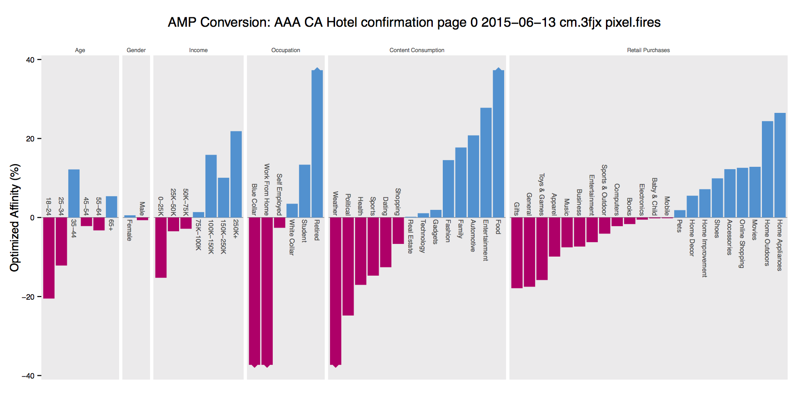

name: inverse layout: true class: center, middle, inverse --- # Building interactive audience analytics with Spark <br/> <br/> Eugene Zhulenev [@ezhulenev](http://twitter.com/ezhulenev) --- ## Problem definition --- layout: false ## Impression log | Ad | Site | Cookie | Impressions | Clicks | Segments | | ------------- |:-------------:| ---------------:| ----------- | ------ | ------------------------------- | | bmw_X5 | forbes.com | 13e835610ff0d95 | 10 | 1 | [a.m, b.rk, c.rh, d.sn, ...] | | mercedes_2015 | forbes.com | 13e8360c8e1233d | 5 | 0 | [a.f, b.rk, c.hs, d.mr, ...] | | nokia | gizmodo.com | 13e3c97d526839c | 8 | 0 | [a.m, b.tk, c.hs, d.sn, ...] | | apple_music | reddit.com | 1357a253f00c0ac | 3 | 1 | [a.m, b.rk, d.sn, e.gh, ...] | | nokia | cnn.com | 13b23555294aced | 2 | 1 | [a.f, b.tk, c.rh, d.sn, ...] | | apple_music | facebook.com | 13e8333d16d723d | 9 | 1 | [a.m, d.sn, g.gh, s.hr, ...] | .footnote[.red[*] - a.m : Male - a.f : Female - b.tk : $75k-$100k annual income - b.rk : $100k-$150k annual income - c.hs : High School - c.rh : College - d.sn : Single - d.mr : Married ] --- ## What we want to know - What is Male/Female ratio for people who have seen 'bmw_X5' ad on forbes.com - Income distribution for people who have seen Apple Music ad - Nokia click distribution across different education levels .center[] --- layout: false ## SQL solution ```sql select count(distinct cookie_id) from impressions where site = 'forbes.com' and ad = 'bmw_X5' and segment contains 'a.m' ``` -- - Looks pretty simple -- - Unfortunately it doesn't work -- - It takes minutes to run this type of queries with Impala or Hive - It's impossible to pre-generate all reports, number of filter combinations is huge - We need instant response for reporting UI --- template: inverse ## HyperLogLog for cardinality estimation --- ## HyperLogLog ```scala trait HyperLogLog { def add(cookieId: String): Unit // |A| def cardinality(): Long // |A ∪ B| def merge(other: HyperLogLog): HyperLogLog // |A ∩ B| = |A| + |B| - |A ∪ B|, def intersect(other: HyperLogLog): Long } ``` - Algorithm for the count-distinct problem, approximating the number of distinct elements (cardinality) - Uses finite space (configurable precision) - Able to estimate cardinalities of >10^9 with a typical accuracy of 2%, using 1.5kB of memory --- ## From cookies to HyperLogLog | Ad | Site | Cookies HLL | Impressions | Clicks | | ------------- |:-------------:|:------------------ | ----------- | ------ | | bmw_X5 | forbes.com | HyperLogLog@23sdg4 | 5468 | 35 | | bmw_X5 | cnn.com | HyperLogLog@84jdg4 | 8943 | 29 | | Segment | Cookies HLL | Impressions | Clicks | | ------------- | :----------------- | ----------- | ------ | | Male | HyperLogLog@85sdg4 | 235468 | 335 | | $100k-$150k | HyperLogLog@35jdg4 | 569473 | 194 | #### Percent of college and high school education in BMW campaign ```scala val adImpressions: Seq[Audience(ad, site, hll, imp, clk)] = ... val segmentImpressions: Seq[Segment(name, hll, imp, clk)] = ... val bmwCookies: HyperLogLog = adImpressions .filter(_.ad = "bmw_X5") .map(_.hll).reduce(_ merge _) val educatedCookies: HyperLogLog = segmentImpressions .filter(_.segment in Seq("College", "High School")) .map(_.hll).reduce( _ merge _) val p = (bmwCookies intersect educatedCookies) / bmwCookies.count() ``` --- template: inverse ## Spark DataFrames with HyperLogLog --- ## Spark DataFrames - Inspired by R data.frame and Python/Pandas DataFrame - Distributed collection of rows organized into named columns - SchemaRDD in Spark < 1.3.0 ### High-Level Operations - Selecting required columns - Filtering - Joining different data sets - Aggregation (count, sum, average, etc) --- ## Spark DataFrames ```scala val adImpressions: DataFrame = sqlContext.parquetFile("/aa/audience") adImpressions.printSchema() // root // | -- ad: string (nullable = true) // | -- site: string (nullable = true) // | -- hll: binary (nullable = true) // | -- impressions: long (nullable = true) // | -- clicks: long (nullable = true) val segmentImpressions: DataFrame = sqlContext.parquetFile("/aa/segments") segmentImpressions.printSchema() // root // | -- segment: string (nullable = true) // | -- hll: binary (nullable = true) // | -- impressions: long (nullable = true) // | -- clicks: long (nullable = true) ``` --- ## Spark DataFrames #### Percent of college and high school education in BMW campaign ```scala import org.apache.spark.sql.functions._ import org.apache.spark.sql.HLLFunctions._ val bmwCookies: HyperLogLog = adImpressions .filter(col("ad") === "bmw_X5") .select(mergeHll(col("hll")).first() // -- sum(clicks) val educatedCookies: HyperLogLog = hllSegments .filter(col("segment") in Seq("College", "High School")) .select(mergeHll(col("hll")).first() val p = (bmwCookies intersect educatedCookies) / bmwCookies.count() ``` --- ## Extending DataFrames DSL - looks like 'native' DataFrame code - works faster than RDD[Row] transformations - easy to manage mutable state inside partition/merge function ```scala case class MergeHLLPartition(child: Expression) extends AggregateExpression with trees.UnaryNode[Expression] { ... } case class MergeHLLMerge(child: Expression) extends AggregateExpression with trees.UnaryNode[Expression] { ... } case class MergeHLL(child: Expression) extends PartialAggregate with trees.UnaryNode[Expression] { override def asPartial: SplitEvaluation = { val partial = Alias(MergeHLLPartition(child), "PartialMergeHLL")() SplitEvaluation( MergeHLLMerge(partial.toAttribute), partial :: Nil ) } } def mergeHLL(e: Column): Column = MergeHLL(e.expr) ``` --- ## Extending DataFrames DSL ### Building complicated structure with DSL ```scala type SegmentName = String val dailyEstimates: RDD[(SegmentName, Map[LocalDate, SegmentEstimate])] = segments.groupBy(segment_name).agg( segment_name, mergeDailySegmentEstimates( mkDailySegmentEstimate( // -- Map[LocalDate, SegmentEstimate] dt, mkSegmentEstimate( // -- SegmentEstimate(cookieHLL, clickHLL) cookie_hll, click_hll) ) ) ) ``` - HyperLogLog is a Monoid - SegmentEstimate is a Monoid - Map[K, SegmentEstimate] is a Monoid --- ## Extending DataFrames DSL <br/><br/> - custom aggregation functions needs to be in `org.apache.spark.sql` package - no guarantee that it will work in next Spark release - `org.apache.spark.sql.catalyst.expressions.Sum` as example --- ## Spark as in-memory SQL database - restart overnight to load new data (data preprocessed with Hive) - cache all the data in memory - serve client requests during business day - simple Spray Http/Json Api - 40 Spark worker nodes in Yarn cluster - 100+ gigabytes cached in memory - average response time ~2 seconds --- ## Spark configuration - spark.scheduler.mode=FAIR - spark.yarn.executor.memoryOverhead=4000 - spark.sql.autoBroadcastJoinThreshold=300000000 // ~300mb - spark.serializer=org.apache.spark.serializer.KryoSerializer - spark.speculation=true - repartition datasets (4-6 partitions for core) --- ## Other options #### Hive - Too slow for interactive API backend #### Impala - Requires writing aggregation functions in C++ - Not so sure that 1-2 seconds latency is easy to achieve #### Druid - Managing separate Druid cluster - We have batch oriented process - Bad support for some of type of queries that we need - Not clear how get data back from Druid? --- template: inverse # Thank you <br/> <br/> [http://collective.com](http://collective.com)